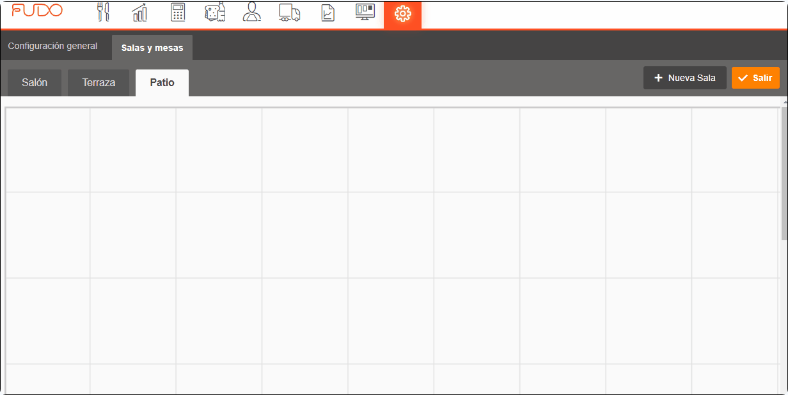

Fudo: cuadrícula vacía del editor
Un toque crea una mesa. Numeración consecutiva. Este fotograma pertenece al GIF del editor; no al primer inicio del POS.

Documentación oficial consultada el 12 de octubre de 2026. Estas páginas no son pruebas autenticadas del primer encendido.
Investigación completaUn toque crea una mesa. Numeración consecutiva. Este fotograma pertenece al GIF del editor; no al primer inicio del POS.
